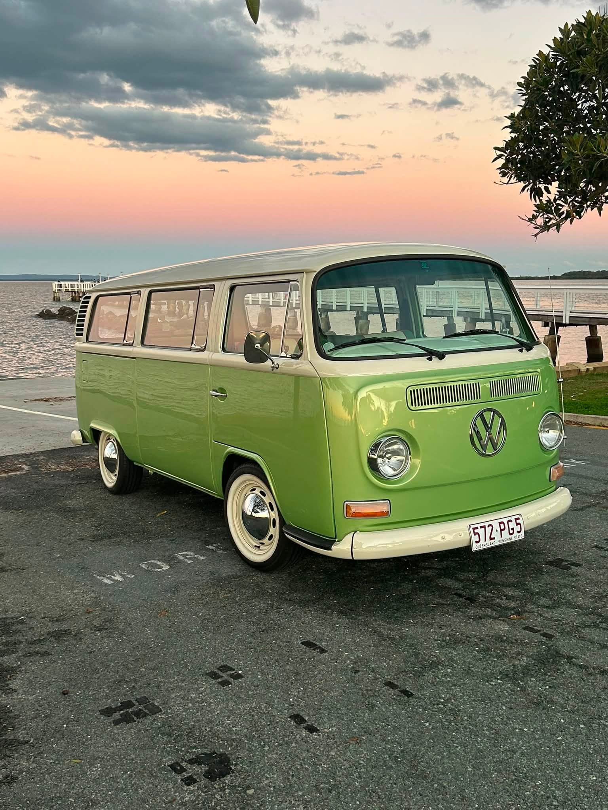

Weddings
Bayside KOMBI Adventures
1972 Type 2 — Wellington Point
Miss Olivia
A 1972 Type 2. Green & cream. Arrive in timeless style.
1972 Type 2 — Wellington Point
A 1972 Type 2. Green & cream. Arrive in timeless style.
The invitation
Six seats. One entrance. Miss Olivia is a restored 1972 Kombi — booked for weddings, formals, races, and coastal days across the Redlands.


Weddings
Formals
Coastal

The Kombi

The Cabin

The Shore
(answers)
A chauffeured 1972 Volkswagen Kombi hire in Wellington Point — booked for weddings, formals, races, and coastal days across the Redlands.
A restored two-tone sage and cream Type 2 Bay Window. Plate 572-PG5. Six seats, chrome heart, whitewall tyres.
Six guests, chauffeured. The driver is included — you ride, she arrives.
Bride and groom transport, bridal party arrivals, school formals, races, girls’ days, and coastal adventures along the bay.
Wellington Point and the Redlands shoreline, with coastal runs across South East Queensland by arrangement.
Call 0407 144 483 or write to baysidekombi@gmail.com. We reply by phone or email.